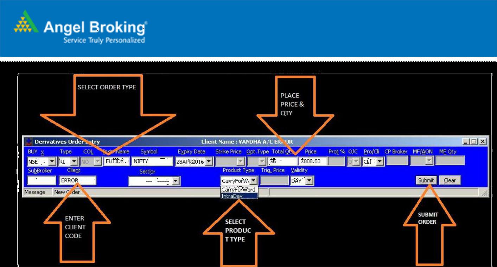

Risk Management Policy
-
Introduction
Investment in securities is susceptible to market risks which cannot be predicted. The Account Opening Document contains an explanation of different types of risks our Customers are likely to face in the market. While the risk of loss is inherent in the market, we as your Broker seek to minimize the risk of loss through a dynamic risk management policy which is an essential feature of our operations. As our customer, it is important for you to be aware of our Risk Management Policy and how the Policy would operate to regulate your transactions. It is also important that the Risk Management Policy is not an insurance against losses; these are measures and precautions that are adopted to contain risks to the minimum. The Policy is subject to change according to our risk perceptions of the market and SEBI/Exchange regulations for the time being in force.
-
Scrip Categorization
For the purpose of risk management, we categorize Scrips listed on NSE and BSE as “Blue Chip”, “Good”, “Average” or “Poor” on the basis of their fundamentals, volatility, liquidity, trading pattern and overall concentration with individual customers. These categorizations form the basis for defining hair-cut on collateral, providing exposure limits, impose trading restrictions, calculate projected risk, prioritize collection, control exchange surveillance related risk, etc.
-
Criteria Sub-criteria Blue Chip Good Average Poor Restricted Financial Market Cap >=5000 Cr >=500 Cr >=100 Cr <=100 Cr Net Worth >=2000 Cr >=500 Cr >=100 Cr <=100 Cr F&O Yes No No No No Employee >=50 Cr >=10 Cr >=2 Cr <=2 Cr <=0.50 Cr Power >=50 Cr >=10 Cr >=2 Cr <=2 Cr <=0.50 Cr Tax >=50 Cr >=10 Cr >=2 Cr <=2 Cr <=0.50 Cr -
Scrip Category Criteria for Scrip Selection Blue Chip - Market Cap & Net worth should be greater than equal to Rs. 5000 Cr and Rs. 2000 Cr respectively. Moreover, from Employee cost, Power cost & Tax, at least any 2 should be greater than equal to Rs. 50 Cr for last 2 years.
- Scrip should be listed in F&O segment.
- There is an exception in the rule for banking stocks that if it is listed in F&O market then Employee cost, Power cost and/or Tax may or may not be greater than Rs. 50 Cr.
Good - Market Cap & Net worth should be greater than equal to Rs. 500 Cr. Moreover, from Employee cost, Power cost & Tax, at least any 2 should be greater than equal to Rs. 10 Cr for last 2 years.
- Scrip satisfying Blue Chip criteria but not listed in F&O segment should be graded as Good.
- Bank stocks not listed in F&O segment should also be categorized as Good.
Average - Market Cap & Net worth should be greater than equal to Rs. 100 Cr. Moreover, from Employee cost, Power cost & Tax, at least any 2 should be greater than equal to Rs. 2 Cr for last 2 years.
Poor - Market Cap & Net worth should be less than equal to Rs. 100 Cr. Moreover, from Employee cost, Power cost & Tax, at least any 2 should be less than equal to Rs. 2 Cr for last 2 years.
Restricted Scrips - Employee cost, Power cost & Tax at least any 2 should be less than equal to Rs. 0.50 Cr for last 2 years.
Note : Based on the above fundamental parameters scrip might qualify in a particular category, but management reserves the right to assign any or lower category based on various other parameters mainly liquidity. The list will be reviewed at the sole discretion of company and the revised list will be updated in the client back office login. However, in extremely volatile market condition, or in case of warnings by regulators/exchanges, scrips may be re-categorized without prior notice and the customers shall regularize their accounts and trade accordingly.
-
-
Dealing in Restricted Scrips
In order to exercise additional due diligence while trading in these securities either on own account or on behalf of their clients:
- Angel shall from time to time classify and publish on its website a list of securities which are restricted based on internal criteria. The policy can be viewed in Angel Client Back office > Policies > Restricted Scrips Policy
- Angel reserves the right to refuse execution of any transaction requests of the client on such restricted securities or to reduce the open market interests of the client in such securities/ contracts.
- Angel also reserves the right not to allow any trades or transactions in respect of certain securities or segments or orders/requests which may be below/above certain value/quantity as may be decided by Angel from time to time.
The following criteria’s have been decided based on the Investment Limit at a client level in allowing trading in restricted scrip:
-
Client Level Investments:
Angel may allow the dealing in restricted scrip, subject to following:
- The Purchase or sell in single restricted scrip’s shall not exceed Rs. 3 lac per scrip in a day
- A Client will not be allowed to trade in restricted scrip (buy / sell) for more than two times a financial year.
- client will be allowed to trade in a restricted scrip maximum upto Rs. 6 lakhs in a financial year.
- Client will be allowed to trade in restricted scrip for a maximum of 2 buys and 2 sells in a financial year.
- If the client has purchased restricted scrip from Angel, then selling will be allowed to the tune of above mentioned parameters.
-
Other Mandatory requirements
- Dealing in restricted scrip would be allowed to the extent of clear ledger credit balance available
- Un - reconciled value of the instrument would be considered ( where client ledger balance is zero ) provided the entry is made in Back office / Inhouse cheque punching module on T day itself and if the same has been approved/authorized by regional operation head or Scan copy of the cheque is been mailed to CSO team on csodealing@angelbroking.com.
- If the Client’s ledger is showing ‘0’ then- Blue-chip + good + Average category holding in Pool and Margin pledge will be considered to buy the restricted scrip.
- If the approved holding i.e. Blue-chip + good + average holding in POOL + Margin pledge covers the debit, balance if any will be considered to buy restricted scrip.
- Dealing in restricted scrips shall be through centralized dealing desk at CSO Dealing Department.
-
Dealing in SME Series scrips traded on BSE / NSE with “SM” & “M” series group
Scrips listed in the SME segment will be restricted for trading on our trading platforms – These series having huge lot sizes & have low liquidity. Eventually these have miniscule participation in terms of volume at the exchange. In order to avoid manipulations or erroneous trading, this category is restricted for Trading.
The trades would be executed ONLY through centralised dealing desk at CSO Dealing Department. Please note important points w.r.t. SME scrips trading
- No fresh purchases would be feasible
- Selling of existing holdings allowed if these shares were allotted through IPO credits in the Angel DP / DP mapped to Angel
- Selling in this scrip would be allowed to the tune of Rs. 3 lakhs only once in a financial year perscrip
- Trade will be placed subject to liquid ity / volume in the market and looking at the tradepattern.
**There will be no exceptions allowed in above
-
Illiquid Contracts and Bonds - Restricted Contracts
We are restricting/ blocking certain Future and options contracts on trading platform to avoid Malpractices or erroneous trading. The Parameters on which we are restricting/ blocking such Contracts are as under:-
Open interest value in the contract is less than 25 Lacs. For future contract Open interest x Closing prices < 25 lacs, in case of option open interest quantity x (strike price + closing Premium price) < 25 lacs.
OrIn case of Option contracts, if strike price falls (+,-) 30 % of previous day closing price of that Particular scrip in cash market.
OrAll contracts having expiry more than 6 months – Any contract which falls under the above parameters will be not allowed for trading on trading Terminals. Such orders can be placed from the centralized desk at CSO Dealing Department.
-
Illiquid contracts for Currency / Commodities segment
Contracts in currency where the OI is less than 500 would be blocked for trading
Contracts in commodities where the OI is less than 50 lots would be blocked for trading
-
Illiquid Bonds:
We are restricting/ blocking certain Bonds on trading platform to avoid Malpractices or erroneous trading. The Parameters on which we are restricting/ blocking such Bonds are as under:-
BOND scrip’s would block for trading, if
Total turnover (Traded quantity*Closing Rate) < 25 lacBOND scrip’s would open for trading, if
Total turnover (Traded quantity*Closing Rate) > 25 lacWhere Bonds are blocked for trading, Orders can be placed from the centralized desk at CSO Dealing Department.
Without prejudice to Angel’s right to restrict/block derivative contracts on the above parameters, Angel may from time to time also restrict client level open interests in any contract(s), in its absolute discretion, depending on its own independent assessment of the market volatility and/or having regard to any client level/or Member level restrictions in any contract(s) prescribed by the market regulators. However, in restricting/blocking derivative contracts, Angel shall be at liberty to prescribe a limit lower than the maximum limit that the Regulator may prescribe for any contract(s) from time to time. Further, in order to ensure that the Member level limit prescribed by the Regulator is not violated in any contract, Angel may also decline further exposure to a Client even if the Client may not have exhausted the client level limit otherwise available to him/her. .
Further we restrict other scrips falling under categories as mentioned below: -
-
Re-listing Scrips:
The scrips are blocked / restricted for trading on the first day of re-listing as risk of price discovery prevails in the market. Such scrips fall under the Restricted and the applicable conditions mentioned above would be applied. -
Other restrictions:
In case of bulk / block deal, prior approval from Risk & compliance will be requiredCircular or Insider trading is strictly prohibited. Action shall be initiated against any trade resulting in price rigging.
Angel shall not be responsible for non-execution/delay in execution of orders in restricted scrips and contracts and consequential opportunity loss or financial loss to the customer. Angel shall have the discretion to place such restrictions, notwithstanding the fact that customer has adequate credit balance or margin available in his account and/or the customer had previously purchased or sold such securities / contracts through Angel itself. Angel shall have the right to revise the list of such securities / contracts on a periodic basis.
Categorisation of the securities under GSM and relevant surveillance actions
In addition to existing Surveillance action being imposed from time to time, it may be noted that these securities shall be monitored for the price movement and based on the pre-determined objective criteria shall attract additional graded surveillance measures.
All of the scrips under GSM would be under Poor and Restricted scrip Category
Stage Surveillance Actions What this means for Clients I Transfer to trade for trade with price band of 5 % or lower as applicable. II Trade for trade with price band of 5 % or lower as applicable and Additional Surveillance Deposit (ASD) of 100% of trade value to be collected from Buyer For Poor and Restricted scrips 100% margin is taken upfront. When the scrip moves in this stage, over and above 100% margin, additional 100% ASD would be collected from the buyer which would be kept separately. The client will not be get any additional exposure against this ASD III Trading permitted once a week trading and ASD 100% of trade value to be deposited by the buyers ( Every Monday) When the scrip moves in this stage, over and above 100% margin, additional 100% ASD would be collected from the buyer which would be kept separately. The client will not be get any additional exposure against this ASD. The buying in these scrips would be restricted to once a week i.e. each Monday IV Trading permitted once a week trading with ASD 200% of trade value to be deposited by the buyers ( Every Monday) When the scrip moves in this stage, over and above 100% margin, additional 200% ASD would be collected from the buyer which would be kept separately. The client will not be get any additional exposure against this ASD. The buying in these scrips would be restricted to once a week i.e. each Monday V Trading permitted once a month trading with ASD 200% of trade value to be deposited by the buyers (First Monday of the month) When the scrip moves in this stage, over and above 100% margin, additional 200% ASD would be collected from the buyer which would be kept separately. The client will not be get any additional exposure against this ASD. The buying in these scrips would be restricted to once a month i.e. first Monday of each month VI Trading permitted once a month with no upward movement in price of the security with ASD 200% of trade value to be deposited by the buyers (First Monday of the month) When the scrip moves in this stage, over and above 100% margin, additional 200% ASD would be collected from the buyer which would be kept separately. The client will not be get any additional exposure against this ASD. The buying in these scrips would be restricted to once a month i.e. first Monday of each month and there would not be any upward movement in Price Additional Notes:
- The list of securities moving from higher stage of Graded Surveillance Measures is informed time to time by the regulators
- Additional Surveillance Deposit (ASD) shall be paid only in form of cash and to be retained till review of the Graded Surveillance stages i.e. Quarterly review.
- This ASD shall not be refunded or adjusted even if securities purchased is sold off at the later stage within a quarter and also shall not be considered for giving further exposure.
- ASD shall be over and above existing margins or deposits levied by the Exchanges on transactions in such companies and shall be interest free.
- In case the scheduled trading day is falling on a trading holiday, the trading shall be permitted on the next trading day.
- Periodic review of securities under GSM framework, to assess relaxation of surveillance action, if any, shall be carried out on a quarterly basis. The review shall be done based on the objective criteria and only securities under Stage II onwards shall be eligible for the quarterly review. For example, a company in stage III of GSM can be moved back to stage II if qualified based on the said objective criteria
Categorisation of the securities under S+ framework and relevant surveillance actions
Upon identification and as per the applicable effective date, the securities falling under “S+ Framework” shall be placed in a separate group “SS”/ “ST”.
In addition to existing Surveillance action being imposed from time to time, it may be noted that these securities shall be monitored for the price/volume movement and based on the pre-determined objective criteria shall attract following additional surveillance actions –
Stage Surveillance Action Group 0 - Imposition of Weekly and Monthly price bands in addition to existing daily, Quarterly and Yearly price bands.
- Imposition of very high transaction charges i.e. 1% of transaction value shall be applicable to both buyer and seller.
“SS”or“ST” I - All existing actions including imposed under Stage 0.
- Shifting to Trade to trade settlement mode.
“ST” II - All existing actions including imposed under Stage I.
- Additional Surveillance Deposit of 200 % of Buy value applicable on buyer
- ASD shall be released in the sixth month from the collection month i.e. minimum retention period of 5 month
“ST” Notes: -
- The list of securities moving to higher stage of “S+” framework as mentioned above shall be informed time to time by the regulators
- At the time of identification of securities for “S+” framework, securities part of B/XC/XD group shall be transferred to “SS” group whereas securities part of “T” group and “XT” group shall move to “ST”group
- Additional Surveillance Deposit (ASD) shall be paid only in form of cash and to be retained for at least a period of 5 months.
- This ASD shall not be refunded or adjusted even if securities purchased is sold off at the later stage and also shall not be considered for giving further exposure.
- All actions on securities placed under S+ Framework shall be over and above all prevailing surveillance actions
-
Risk Management Policy:
We understand, that the Company has adopted this policy in its capacity as a SEBI registered intermediary with an objective to mitigate any risks involved in relation to investments made by its clients and handling of client portfolios. However, the policy does not provide for methods to manage any risks arising from its business or the industry in which it operates such as technological, economic and market risks that the Company may be subject to. Pursuant to Regulation 17(9) of the Securities and Exchange Board of India (Listing Obligations and Disclosure Requirements), Regulations, 2015, (the “Listing Regulations”), the board of the Company is required to frame risk management plan and lay down procedures for risks assessments and minimization procedures; and -
Insider Trading Policy:
We understand that the company is listed, and is in the process to adopt Code of Fair Disclosure pursuant to Regulation 8(1) of Securities and Exchange Board of India (Prohibition of Insider Trading) Regulations, 2015 (the “Insider Trading Regulations” and a Code of Conduct pursuant to Regulation 9(1) of Insider Trading Regulations for dealing in its own securities.
-
-
Assigning Trading Limits
Margin/Deposit based limits are assigned to the customers for trading purpose. VaR/SPAN margin specified by the exchanges is blocked at scrip level on the positions taken by the clients during the day.
- Deposit calculation: Deposit is calculated at customer level after netting off ledger balance in all segments and Holding lying in Angel. Margin is calculated as follows:
- Margin = Ledger Balance (Dr/Cr) + Net value after haircut of holding & margin pledge available with Angel.
- Valuation of holding & margin pledge: Holding & margin pledge valuation is done on previous day’s closing price. Net valuation is calculated by applying appropriate haircut based on VaR margin percentage specified by the exchanges or Angel prescribed rates, as the case may be.
- Extreme market conditions: Limits are assigned based on credit in the ledger. In such conditions, clients will be allowed to buy only to the extent of ledger credit available.
- Single order quantity and value cap: In order to minimize loss from possible punching errors by a dealer while executing the transaction for a customer, Risk Management of Angel puts restriction by capping the maximum quantity and value per order and orders exceeding that maximum quantity or value cap will be rejected. Angel also sets terminal level limits to contain loss from erroneous trades getting executed. Angel shall not assume any liability in respect of orders rejected by reason of their quantity or value exceeding the cap value.
-
Auto square off process
-
Risk Square off / Projected Risk Square off:
Square off value is calculated on the basis of projected risk and square off is done to the tune of exchange VaR OR Angel VaR (whichever is higher)
Calculation of Projected Risk for Auto Square Off:Projected risk = A client is expected to maintain atleast 50 % of the VaR (exchange VaR OR Angel VaR whichever is higher) in order to avoid the projected square off. If the same is not maintained, the client would be qualified for a projected Risk square off and an intimation would be triggered – Client would be given a day time to make good the shortage amount failing which it would be squared off on the following trading day.
Action in case of projected risk:- Holdings (based on the Angel Scrip category) will be liquidated / squared off to the extent of Valid VaR shortage (exchange VaR OR Angel VaR whichever is higher)
- It is a Potential Risk of a client in occurrence of adverse market condition during the day
Sequence of Square off / Liquidation followed: Holdings in the form of securities taken in sequence of Latest settlement (LIFO basis) starting from poor category scrips followed by average, good and bluechip category scrips. If there is still a requirement, then the collateral is also taken for Square off Along with Cash segment i.e BSE & NSE; the other leverage / derivative segments ledger debits and 50% total margin is considered for calculating projected risk.
It is a Potential Risk of a client in occurrence of adverse market condition during the day. -
Ageing Debit Square off (T+7)
It is client’s obligation to clear his/her outstanding dues by T+2 (T indicates Trading day). The client shall ensure timely provision of funds to Angel Broking Ltd so as to meet exchange obligations. Angel reserves the right to close the positions / sell securities to the extent of ledger debit and /or to the extent of margin obligations.
Selling will be done in clients account on T+7 days for the ledger debit which is more than T+6 days on ageing basis. For e.g.: All trades executed on Monday will be squared off on next Wednesday (T+7) where T indicates Trading day. In other words, if funds are not received for scrips purchased on Monday by next Tuesday i.e. T+6, Angel shall liquidate securities to the extent of ledger debit.
Sequence of Square Off:Square off will be done considering scrips with latest settlement in a sequence of blue chip category first, followed by Good, Average and Poor scrips respectively
Where the client has not submitted the POA for the DP account or the DP account is made inactive, Angel will reserve the right to square off such securities if the funds are not received within 6 days from the data of purchase
-
Margin Trading Facility (MTF) square off
The details of the same is clearly enlisted in the Rights and obligations document
Applicable minimum initial margin and increased margin, if any, shall be kept supplied at all times by the clients in respect of the stocks purchased under the MTF. Client shall pay any shortage in the required margin immediately on receiving demand (margin call) and in any case not later than 11.00 P.M on the trade day following the day of making the margin call (prescribed time) failing which Angel shall be at liberty to liquidate the funded shares and/or collateral shares to recover the dues outstanding in the account of theClients.
In case of extreme volatility in the market, Angel may demand payment of margin forthwith and prescribed time for making margin payment shall be construed accordingly. Decision of Angel in relation to market volatility shall be final and binding without Angel having to provide any reason for the decision to the Client In case there is a shortfall, margin call would be made on T day itself – In the normal market condition, it is expected that the client makes good the shortage within T +3 day failing which the position would be liquidated on T+4 day to the extent of margin shortfall
However, during volatile market conditions and there being a situation where there is a significant movement in the market, Angel reserves the right to liquidate the holdings much in advance
Client can view details of his/her ledger, holdings, margin shortfall etc via secured login on Angel broking’s trading website / mobile app. Regular intimations regarding debit, information about shortage and communication regarding liquidation will be sent through SMS and email on the clients’ registered mobile number and email address respectively.
Square off will be done on LIFO basis, last settled shares from poor to blue-chip category will be considered for square off first followed with unsettled shares from blue-chip to poor category. Scrips eligible for square off are blocked till square off is initiated in all types of square off.
For a client who has opted for MTF and trades in scrips which are un approved (not part of Group 1 securities) , the outstanding debits will have to be cleared within T + 6 days failing which the aged debit more than the 7th day would be liquidated as per the exchange norms . Sequence of this square off will be LIFO last settled shares from blue-chip to poor category
Of the above square offs, the priority of the square off would be given to projected risk. At a client level (whether a customer is activated for MTF or is an Non MTF square customer) would come under projected risk if 50% of the Angel stipulated VaR margin is not maintained (as explained under Projected risk square off)
-
Risk Square off / Projected Risk Square off:
-
Margin collection in Cash and Derivative segments
Margin is collected upfront from all clients in leveraged segments. Daily Mark to Market losses shall have to be paid latest by T+1 day and any shortages in respect of Margin shall be payable forthwith. In case of default to provide Mark to Market losses or Margins accordingly, Angel Broking shall be entitled to square off the open market positions without further reference or notice to the Clients. In case of extreme market volatility, margins may be demanded on intra-day basis and Clients should be able to replenish margins on immediate basis to avoid square off. Where market conditions so warrant, Angel Broking may demand payment by electronic transfer and refuse to accept payment by cheque. Shortage in Margin shall attract penalty as may be levied by the Exchange. All losses from daily settlements and losses from square off which are not paid shall be recovered by selling available collateral shares of the Client and Client shall be liable to pay the remaining balance forthwith.
Note: Poor scrips as categorized by Angel (inclusive of BSE & NSE illiquid scrips) will not be accepted as collateral in leverage segments.
Collateral provided as margins should not be exceeding the concentration values mentioned below as per their categories.
Restrictions on acceptance of single scrip concentration as per category are given below:
Scrip Concentration for cash and derivatives segments:If any debit arises due to scrip concentration, then client needs to update the funds or transfer other approved securities or reduce the concentrated scrip to the extent of breach value.
Restrictions on acceptance of single scrip concentration as per category are given below:
- Acceptance of single “Blue chip” category scrip should not be more than 3 crores
- Acceptance of single “Good” category scrips should not be more than 50 lacs and,
- Acceptance of single “Average” category scrips should not be more than 20 lacs.
Over and above the category cap, we will not allow our clients to go beyond 0.5% of the market cap of the company in single scrip
In case of deviation to the above deviations, a time period of 7 days would be given. However, in cases of volatile market conditions or cases where there is abnormal movement in the underlying or due to any other reason where the risk management team feels that the position cannot be allowed to continue, the leeway of the 7 days may be withdrawn and the position may be liquidated
Angel also has capped single scrip / instrument wise exposure limits. No client will be allowed to go beyond this exposure limits set in a single scrip / instrument
CASH Turnover in Cr. ( average of last 30 trading days ) MAX EXPO
in Cr1 to 50 2 50 to 250 5 >250 10 FUTIDX Expiry MAX EXPO
in CrCurrent Month 30 Next Month 20 Far Month 10 OPTIDX Turnover in cr MAX EXPO
in Cr< 10CR 5 10 to 100 10 100 to 500 20 Above 500 30 FUTSTK Turnover in cr MAX EXPO
in Cr< 50CR 5 50 to 100 7.5 100 to 300 10 > 300 15 OPTSTK Turnover in cr MAX EXPO
in Cr< 1 1 1 to 200 3 >200 10 Currency Future - USD INR MAX EXPO
in CrCurrent Month 75 Next Month 30 Far Month 10 Currency Future - Other & options MAX EXPO
in Cr> 500 cr ( USD INR ) 30 > 75 cr to 500 cr 10 ess than 75 cr 3 Precious Commodities (Crude Oil / Gold ) MAX EXPO
in Cr> 1000 cr 50 100 to 1000 cr 15 Less than 100 3 Other Commodities MAX EXPO
in Cr> 1000 cr 20 100 to 1000 cr 10 Less than 100 3 -
Margin Reporting
- For same day margin requirements, clear ledger balance as on date will be considered.
- Ledger balance calculation will be done by netting off balances across segments i.e. Cash, F&O, Currency and Commodity.
- Across all segments, shares in Margin pledge / Client unpaid securities account with previous day’s valuation, after Angel prescribed haircut, will be considered.
- Post valuation/calculation of the above, cash segment will be given first preference and in case of excess margin, the same will be considered for reporting of NFO, Currency Derivatives, MCX &then NCDEX.
- All other terms & conditions including levying of margin shortfall penalty will remain as is and in line with regulatory requirements.
-
Intimation to clients
Client can view details of his/her ledger, holdings, margin shortfall etc via secured login on Angel broking trading website. Regular intimations regarding debit, information about margin shortage with penalty amount (real time margin shortage), communication regarding liquidation is sent through SMS and email on the clients’ registered mobile number and email address respectively.
-
Physical settlements in Leverage segment
FNO
- Till the last day of expiry, if the client wishes to convert the futures contract (which are available for trading on Angel platform) into physical delivery; the entire delivery margin will have to be provided.
- All Options contract (ITM / ATM / OTM) will be blocked for trading on the expiry day as well as one day prior to expiry for trading
- If the client wants to convert an ITM / ATM contract to physical delivery, the entire applicable delivery margin would have to be supplied in trances of 10% , 25% ,45%,70 % Four days prior in the mentioned sequence respectively as mentioned by the regulators . In case the required margins are not supplied, Angel reserves the right to liquidate the contract without allowing to convert to physical settlement
Commodities- Contracts would be blocked for trading five days prior the staggered period
- If the buyer wishes to convert the position to physical delivery, the entire value of the contract would be required. In case the amount is not supplied, Angel reserves the right to liquidate the contract without allowing to convert to physical settlement
-
Intraday Product Policy:-
- Positions created under Intraday Product would be subject to either client himself squaring off (if done online) OR dealer based square off OR MTM Loss @ 80% of Total Deposit (Ledger + Holding after Haircut) - Risk Square off OR Time Based Square off.
- Client cannot Carry Forward any positions in Intraday Product.
- All pending orders / unexecuted / partial orders will be cancelled as per intraday product features.
- No fresh orders will be accepted in Intraday after Time based square off.
- Square off Times will be as under for the following exchanges (Cash: 3.15 pm, Derivatives: 3.20 pm, Currency & Agro Commodities: 4.45 pm, Commodities: 11.15 pm (if the market closes at 11.55 pm then the square off time would be 11.40 pm).
- All positions under Intraday Product will be subject to 80% MTM Loss i.e. positions will be liquidated if loss reaches to a pre decided level of client margin loss. The OPEN positions ( i.e. the carry forward overnight positions ) and the intraday leverage position ( across segments ) will also be squared off at 80% MTM
- At MTM loss the position will be reduced on best effort basis and customer will be liable for such losses.
- Product available for Equity Futures / Options Selling & buying / Currency Futures / Commodities Futures
- Clients registered with Angel and dealing in Capital Market / Derivative Market / Currency Market having allotted client code as UCC would be availed the facility offered by Angel in Intraday trading in the exchange segments in which client is registered for trading.
- Client confirms that he is aware of the Intraday Product and its features and have clearly Understood the risks associated with Intraday Trading.
- Client understands that he/she is allowed a higher leverage in the Intraday Trading Facility as compared to trades in the regular market positions and, therefore, while the opportunityfor making profits on the investment is magnified, the risk of loss would also be enlarged correspondingly
- Client understands that Intraday Trading would be allowed only if the margin required under the Facility is already available in his account with Angel.
- Client agrees and accepts that enlisting him/her for the Intraday Trading Facility shall not oblige him/ her to place Intraday Orders requested in any scrips even though margin required for placing a trade order under the Facility is available in the account.
- Client also understands and agree that the option to convert Intraday trade positions to carry forward positions is subject to full margin being made available upfront unless such margin is already lying to the credit of the account with Angel
- Clients are aware that under the Facility, unless the positions are carried forward as stated above, all open positions shall be squared off by Risk Management Team at the prescribed cut-off time on the same day of their acquisition unless the positions are sooner squared off upon the positions incurring a loss to the extent of the prescribed maximum limit or more as may be determined from time to time.
- Client agrees and accepts that if for any reason beyond our control, like force majeure causes, disruptions in the communication network, system failure, slow or delayed response from system, trading halts, or the Exchange applying circuit filters because of which the open Intraday positions could not be squared off and are carried forward, client is expected only to Square them off on a best effort basis, as soon as may be, and any and all losses arising from such events will be to my/our account.
- Client agree and accept that he/she will not hold Angel Broking Pvt. Ltd , their directors, officers or employees liable for any loss that may sustain as a consequence of availing of this facility. All terms and conditions of the agreement that are executed shall remain effective and in force in all respect until terminated in terms thereof. Client are expected to refer FAQ about Intraday Product sent to them for detail understanding of the features and risk of Intraday Product
Intraday Product
-
Product Features:
Intraday product is designed for higher market exposure to Clients in Equity Cash /Derivatives / Currency and Commodity markets, against a given investment. This product is suitable to Clients who are keen to make most out of favorable market movement from a given investment. The product allows the Client market exposure several times more than what would otherwise be possible in the normal order types with a given amount as margin. Intraday products are opened for the day and squared off the same day, following certain pre-defined logic.
How it works (Example):In a regular margin based trading scenario, on Rs. 18,000/- as margin in the derivative segment, a Client would be able to take one NIFTY, if one NIFTY is Rs. 2 lakh and the margin required is 9%. By opting for our Intraday product, against the same amount of Rs. 18,000/- a Client can obtain as many as 6 NIFTY contracts, which would mean 6 times higher return on the same investment.
How to place Orders as Intraday Product:To trade in this product, Orders have to be placed specifically marked as “Intraday” trade. Clients may place orders for this product in offline or online modes, as in the case of regular orders.
Benefit of limit multiplier:Clients have the option of choosing the number of times higher exposure (multiplier) is required by them subject to the maximum multiplier limit prescribed for the segment.
Limit : 0 - 1 Crore Limit : Above 1 Crore Equity Futures and Options Sell, EQ Cash, Commodity Futures & Currency futures 2 x 1 x Options Buy - Equity , Currency & Commodities / NCDEX future 2 x 1 x The margin blocked against a unit of INTRADAY position is a reduced amount proportionally inverse to the limit multiplier chosen. For e.g. if the limit multiplier is 5, the margin blocked against per unit open position would be 1/5th of the margin that would be required for the same exposure in a normal trade.
Intraday Position Square off:All Intraday positions shall be squared off the same day following a predefined logic, automatically. Square off in different segments shall be carried out as per the time schedule shown below:
Segment Square off time (Time based square off) Capital and Derivative Segments of equity market Between 3.15 p.m and closure of the market Commodity Segments - Between 11.15 p.m. and market closure when the market closes at 11.30 p.m.
- Between 11.30 p.m. and market closure when the market closes at 11.55 p.m.
Currency and Agro Commodities Between 4.45 pm and closure of the market However, if the market loss on “Intraday” positions reaches 80% (the trigger) of the total funds (cash and cash equivalent of collateral securities as adjusted to hair cut) available, the “INTRADAY” positions would be closed out as soon as the trigger is reached. In this case, all open positions across all segments, i.e., including positions other than Intraday positions, will also get squared off simultaneously. The Risk Management System of Angel (RMS) will constantly monitor the “Intraday” positions for the Clients and close them out accordingly.
After the positions are squared off, whether time-based or trigger based, no fresh Intraday positions would be allowed for the day and all pending orders would be cancelled. Clients have the option of squaring off the Intraday positions any time before they are squared off as per the above pre-defined logic. They will also have the option to convert INTRADAY positions before they are squared off into CARRYFORWARD positions as explained below.
Angel will notify the Clients through SMS and/or emails, if the Intraday positions incur MtoM loss. SMS intimation would be sent when the MtoM loss is at 50%, 70% and 80% of the total funds (cash and cash equivalent of collateral securities as adjusted to hair cut) in the Client account. Client may make payment online (net transfer) to replenish funds so that compulsory square off trigger is not activated which shall be across positions in all segments.
Intraday Product Note -
Frequently Asked Questions (FAQ’s)
-
What are the benefits of INTRADAY PRODUCT?
One can take higher leverage on a given investment as per ones risk appetite. For example, one can take maximum leverage up to 8 times of the margin available (Cash + Collateral) in derivatives segment.
-
How does it function?
Intraday Product is an intraday order facility, wherein client’s orders are squared off the same day following certain pre-defined logic. The margins blocked against Intraday product would be a reduced amount depending upon the limit multiplier. Higher the limit multiplier, proportionally lower would be the per unit margin for the positions contracted. The Intraday position is monitored by Angel RMS and squared off on T day, which shall be either time based or as the case may be trigger based, whichever event occurs first.
-
What happens if you have taken one trade in Intraday product & other trade onCarry Forward product for the same scrip/contract?
When the intraday positions are squared off at the trigger (i.e., when MtoM loss equals or exceeds 80% of the total funds (cash and cash equivalent as adjusted to hair cut), all open market positions, across all segments, whether in the same scrip or not, get squared off automatically. Except in this situation, positions other than Intraday positions would not be affected; they would be maintained subject to availability of margin as per the margin norms unless the Client initiates square off. It is further clarified that if and when available funds (cash and cash equivalents) are eroded by 80% due to MtoM in any positions, not necessarily Intraday positions, all open interests, including carry forwards shall be auto squared off, following auto square off auto square off policy.
- Clients are required to be cautions and careful while taking Intraday positions as they are leveraged products and hold the potential of not only yielding high profits but also of magnifying the losses as compared to normal trades.
- Is Intraday Product available at all times for Clients to trade? Availability of Intraday product will depend upon Angel’s assessment of market volatility and risk. Angel may withdraw or temporarily disable the facility to place orders as Intraday orders without assigning any reasons
-
Can Intraday positions be taken in all scrips/contracts?
In cash segment, Intraday positions can be taken only in shares that are also admitted for trades in futures market. In
cash and derivative segments, trading is allowed depending upon liquidity of the shares/contracts. Clients may check
the list of scrips restricted for trade notified by Angel from time to time.
Orders & Trades in Intraday -
How to place a Intraday order?
Option to place Intraday order is available in all our Online Trading platforms. Place order from any of the trading platforms as per your convenience. In the order placement screen select product type “Intraday” while placing order.
 - Can Intraday order be modified after order placement? All the pending unexecuted Intraday orders (partially or fully) can be modified or cancelled anytime before execution. Margin requirements will be recalculated and adjusted accordingly.
- On what basis is Exposure/ trading Limit calculated for Intraday Order? Exposure /Trading Limit is calculated on the basis of Net Available Balance (Ledger balance + Pool holdings + Collaterals (after Haircut)
- Is there any charge to avail of this facility? No charges, except for brokerage and other levies as applicable on regular trades.
- What happens if there is a loss in the positions taken in Intraday Product? All losses including loss in Intraday products have to be cleared promptly. If available cash credit is nil or insufficient, collaterals would be enforced to recover the unpaid dues.
- What happens if a pending Intraday order is NOT executed? All such orders would be cancelled immediately before time based square off is initiated
- Is it possible to convert pending Intraday ORDER to Carry Forward during Market Hours? NO. In such case, remove/cancel the pending Intraday order and place a new order in Carry forward
- Is it possible to convert Intraday TRADE positions to Delivery / Var margin during Market Hours? Yes, provided the conversion is carried out before the positions are squared off as per the pre-defined logic and full VAR margin required for regular trade in the positions sought to be converted is made available.
- Is it possible to convert Intraday TRADE positions to Carry Forward during Market Hours? Yes, provided the conversion is carried out before the positions are squared off as per the pre-defined logic and full margin (Span + Exposure) required for regular trade in the positions sought to be converted is made available.
Conversion of Orders & trades
-
Bracket Order:-
3 leg order (bracket) order allows placing an order with a Profit target and stopping loss target in a single order screen. This means that as soon as the main order is executed the system will place two more orders (profit taking and stop loss) - When one of the two orders (profit taking or stop loss) gets executed, the other order will get cancelled automatically.
Margin applicable will be:
Limit Price– Stop loss price * Qty + Applicable VAR Margin
Important Features of the Bracket order- A reduced margin to be paid
-
Time based square off for bracket order positions
Segment Square of time Equity Cash and Derivatives (FUTURE BUY & SELL) Between3.00 pm to close of market hours ** Bracket Order is enabled only on Angel Speed Pro and CTCL Terminals.This facility is available for Equity cash, derivative (Future buy and sell). All the scrips / contracts which are available for trading in regular trading system, would be available for trading in the 3 leg order
-
Client agrees and accepts that if for any reason beyond our control, like force majeure causes, disruptions in the communication network, system failure, slow or delayed response from system, trading halts, or the Exchange applying circuit filters because of which the open positions could not be squared off and are carried forward, client is expected only to Square them off on a best effort basis, as soon as may be, and any and all losses arising from such events will be to my/our account.
-
Client agree and accept that he/she will not hold Angel Broking Pvt. Ltd , their directors, officers or employees liable for any loss that may sustain as a consequence of availing of this facility. All terms and conditions of the agreement that are executed shall remain effective and in force in all respect until terminated in terms thereof. Client are expected to refer FAQ about Intraday Product sent to them for detail understanding of the features and risk of Intraday Product
-
Policy to Mitigate Other Risks associated with the Business:
The Company realizes the importance of Risk Management framework and has taken early initiatives towards its implementation. The assessment and addressing of various risks shall be carried out considering the following key steps for clear understanding, reviewing, structured reporting and addressing.
Use of various risk assessment techniques/processes:- Questionnaire and checklist.
- Sharing of ideas and discussion of the events that would drastically impact the objectives, stakeholder expectations or key dependencies.
- Onsite verifications and periodic audit of compliances.
- Process flow diagrams of the activities and dependency analysis
- Budgeting / Forecasting etc.
- Risk Identification: if there is a material change in circumstances or a consequence that may occur, and whose occurrence, if it does take place, has significant harmful or negative impact on the achievement of the organization’s business and goal.
- Risk description: Understanding the nature and quantum of risk and its likely impact, both financial and non-financial, and plan for possible mitigation measures.
- Risk Estimation: The process for estimating the cost of likely impact either by quantitative, semiquantitative or qualitative approach in terms of the probability or occurrence and the possible consequences.
- Risk Reporting: Managers must report all new risks and changes to existing risks or probable risks in the respective functional areas to their immediate supervisor or vertical head or functional head, as soon as the manager has identified the risk. The supervisor or vertical head will in turn report all material and new risks and changes to existing risks with the plan to mitigate with the time line for implementation to the Internal Committee. The Internal Committee will have to update and seek advice to the members of Audit Committee and Board of Directors as well. The Internal Committee shall also monitor the mitigation process and ensure control and communicate to the stakeholders on regular basis as part of Corporate Governance.
- Risk Mitigation: A well-defined and thorough reviewed strategic plan duly approved by the Internal Committee and the members of the Board of Angel Broking Pvt. Ltd. would then be prepared. This will be implemented in a structured way with the requisite changes in the existing system or practices within a time line to achieve the desired goal. The risk mitigation plan shall be reviewed and monitored by the Internal Audit of Angel Broking Pvt. Ltd. in co-ordination with the Compliance Team and the progress of implementation shall be reported to the Audit Committee and Board Members on regular basis.
This risk assessment and management policy shall subject to change and modification, if needed, considering the dynamics of operations, business plans and strategy of managements from time to time. The Board of Directors before implementation shall approve all changes in this policy. The amended policy has to be uploaded on the website of Angel Broking Pvt. Ltd. from time to time.